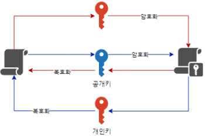

비대칭 암호
암호화 키와 복호화 키를 서로 다른 키를 사용하는 방식
대칭 암호화에 경우 암호 키(어떤 글자가 뭘로 바꿨는지 정보)만 알면 어떤 평문이든 쉽게 복호화가 된다는 문제가 있다. 즉 암호 키 교환 과정에서 중간자 공격에 매우 취약하다.
비대칭 암호화는 암호화에 사용되는 Pubilc키 와 복호화에 사용되는 Private키를 따로 사용하여 1번 Pubic키로 암호화한 평문은 반드시 1번 Private키로만 복호화 가능하다
따라서 암호 키 교환 과정 시 Pubilc키 만 교환하여 중간자 공격을 하더라도 그걸 복호화 할 수 있는 Private키가 없다면 사실상 무용지물이다.
보통은 공개키로 암호화, 비밀키로 복호화 하지만 그 반대도 가능하다
키-쌍: 비대칭 키를 생성할 때는 반드시 Pubic키 에 맞는 고유한 Private키를 쌍으로 생성해야 된다. 단순히 Pubic키 따로 Private키 따로 생성하는게 아니라
현재 많이쓰이는 RSA 알고리즘이 대표적이다
암호화 원리
암호가 지켜지는 기본적인 원리는 컴퓨터의 소인수 분해에 있다.
123x123 같은 단순 곱셈 연산에 경우 아무리 큰 수라도 2진법 계산이 가능한 컴퓨터는 전부 계산 할 수 있다.
하지만 884339를 소인수 분해를 하라라고 했을때 사실상 노가다 말고는 답이없다. 이제 저 주어진 수를 천문학적인 단위로 바꿔버린다면 몇백년이 걸려도 현재 컴퓨터에서는 풀수가 없다… 에초에 소인수 분해라는게 나누는거 밖에는 별다른 규칙이 없어서
이것이 현재 리만 가설의 주된 논제 중 하나이며 P/NP 문제의 NP(다항 시간내에 판결하지 못하는 문제)에 해당한다.
암호 키 과정을 간략하게 서술하면
- 두 소수 , 를 지정한다. ()
- 와 를 곱한 수를 구한다 (407)
- 공개키에는 407과 특정 수 을 지정하여 두 수의 연산을 통하여 암호키를 생성한다 (이때 값은 두 에 대한 어떤 수식의 의해 결정된다)
- 비밀키에는 407과 특정 수 값에 대한 정보를 포함하게 되어 (이때, 값은 어떤 수식에 의해 결정되는데 위 공개키에서 결정된 값으로 암호화된 구문에 원래값을 찾을 수 있는 값이다) 암호화된 구문을 복호화 할 수 있도록 한다
비대칭 암호화에서 소인수분해 문제가 나온 것이 복호화를 위한 비밀키가 없을 경우 공개키에 값을 소인수 분해를 통해 복호화가 가능한 취약점이 있기 때문 인 것이다.
암호화 과정
참고자료
두 소수 p와 q를 11과 37이라 하자. 그리고, 10(p-1)과도 36(q-1)과도 서로소인 정수 e을 7로 정하자 (10과 36에 약수에 포함되지 않는 수). 이때 공개키에 포함되는 정보는 과 이다.
등식을 만족하는 d를 구해야 한다 (mod 는 나머지 연산) 확장된 유클리드 호제법을 사용하면 빠른 시간 내에 구할 수 있다. d=103
비밀 키에는 d 값과 N 값을 포함 시키게 된다. 공개키= 개인키=
평문 240을 암호화 해 보자. 240의 7제곱을 407로 나눈 나머지는 235이다. 이제 235를 비밀키를 가지고 있는 사람에게 전달한다
- 여기서 소인수분해 문제가 생긴다. 얼핏 보면 공개키에 값이 주어졌으니 평문만 미지수 라고 가정하면 라는 등식이 나오므로 공개키만 가지고도 복호화 할 수 있는거 아닌가라고 생각된다. 근데 문제는 저 값을 구하는 게 소인수분해 말고는 없기 때문에 사실상 공개키 만으로 복호화가 힘든 것이다.
받은 사람은 과 의 값이 각각 407 과 103 임을 알고 있으므로, 전달받은 235의 103제곱을 407로 나누면 나머지가 평문이 된다.
이게 가능한 이유는 오일러 정리에 나와있다.
모듈러 연산
5를 3으로 나눈 나머지는? 이라는 소리
합동(≡)
5와 8 모두 3으로 나눴을 때 나머지가 2이므로 나머지가 서로 같다는 걸 의미함
양자 컴퓨터와의 관계
양자 컴퓨터가 등장하면 큐비트 연산을 통한 쇼어 알고리즘이 사용이 가능하여 이런 비대칭 키가 다항시간 내에 뚫릴수가 있다
사용 예
네트워크 암호화 통신
여기선 HTTPS 에 TLS 원리랑은 조금 다르니 주의할 것
 서버-클라이언트간 양방향 통신 암호화
- 클라이언트는 비대칭
키-쌍을 생성하여 서버와 연결 이때 서버에 클라이언트 자신이 생성한 공개키를 서버에 보냄 - 서버도 비대칭
키-쌍을 생성하여 연결된 클라이언트에 자신이 생성한 공개키를 클라이언트에 전송한다 - 그럼 클라이언트는 서버에 공개키를, 서버는 클라이언트에 공개키를 가지게 된다.
- 클라이언트가 데이터를 전송할 시 서버에 공개키를 사용하여 암호화를 진행하여 전송하고, 전송받은 서버는 자신의 비밀키를 사용하여 복호화 한다.
- 서버가 데이터를 전송할 시 클라이언트에 공개키를 사용하여 암호화를 진행하여 전송하고, 전송받은 클라이언트는 자신의 비밀키를 사용하여 복호화 한다.
- 즉 둘 사이 오간 암호키는 공개키 밖에 없으므로 중간자 공격에서 방어가 되는것 이다.
전자 서명 (인증서)
비대칭 키에 특성 상 개인이 소유한 키-쌍 을 가지고 암호화한 정보는 자신만이 볼 수 있어서 누군가가 위 변조할 수 없는 부인 방지의 역할이 있다는 것을 이용하여 인터넷 상에서 서명을 하는 방법
공인 인증서, 및 다른 민간 인증서가 다 이런 원리이다
전자서명은 보통 개인키로 암호화 하고, 공개키로 복호화를 진행한다
이때 키-쌍 은 서명 인증 주체로 부터 발급 받은며
서명 내용은 자신의 개인정보 등과 발급 받은 공개키를 해 시 한 값이며
서명을 인증하는 주체는 서명내용에 들어가는 공개키를 자신도 알고있는 상태에서 서명자가 했던과정을 똑같이 하여 두 내용이 같은 해시값을 가지는지를 판단하여 서명 위 변조를 판단한다.
해시값
참고자료
특정 값을 식별하는 고정 길이에 값으로 변환하는 함수
SHA-256 0d20951336a0e6a39da2682efff30ab31012e88ea606aea6fdae9b502012fe5
Hash 함수 자료구조를 활용한 값 체크 방법
해시에 특징은 데이터의 길이와 상관 없이 동일한 길이에 데이터가 출력이 된다. 또한 단 1비트만 달라져도 기존 데이터와는 상관없이 아주 랜덤한 해시값이 나온다.
해시에 핵심은 이유는 동일한 데이터가 입력될 경우 같은 해시값이 나온다는 건데 문제는 그 해시값으로 기존에 데이터를 유추하는것이 사상 불가능 하기 때문이다
다만 해시가 충돌할 수도 있으므로 주의는 해야한다.
또한 에초에 암호화를 목적으로 나온게 아니라 복호화가 불가능 하지만 같은값은 동일한 값을 출력한다는 특성을 이용하여 사용자의 입력이 올바른지, 데이터 무결성, 체크섬(오류체크) 등에 쓰인다
또한 해시에 이런 원리를 이용하여 빠른 Indexing을 구현 할 수 있는데 예를 들어 자료가 10000개인 데이터가 있다고 할 경우 사용자가 특정 검색어를 검색하면 10000개를 다 순환하면서 검색어와 일치하는 결과를 찾아야 되는데 이걸 10000 까지 에 수를 가지는 해시함수를 사용하고 10000개의 공간의 배열을 할당 (해시 테이블) 데이터 저장과 검색 시 모두 해시함수를 거치게 끔 하여 시간복잡도를 O(1) 수준으로 만들어 버릴 수 있다.
- 보통의 Map 자료구조가 대부분 해시인것이다
해시함수
- MD5
- SHA
- CRC
사용 예
DB 비번 암호화해시값으로 원래값을 유추하지 못한다는 특성이 있어서 DB에서 비번이 유출되더라도 원래 비번을 찾을 수 없어서 보안에 유리하다 사용자가 비밀번호를 입력할 경우 이 값을 해시 하여 DB에 저장된 해시값과 동일하다면 검증이 완료됬다고 볼 수 있다. 다만 비밀번호 찾기를 구현할 때 사실상 실제 비번을 알 방법이 없으므로 비밀번호를 그냥 재설정 하도록 유도해야한다.